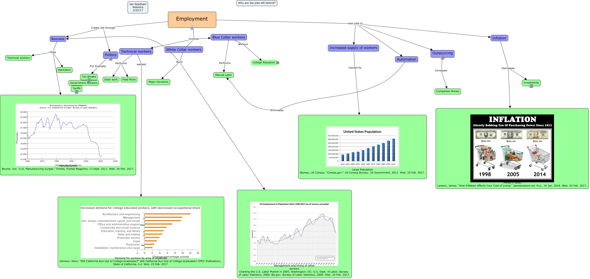

WARNING:
JavaScript is turned OFF. None of the links on this concept map will
work until it is reactivated.
If you need help turning JavaScript On, click here.
This Concept Map, created with IHMC CmapTools, has information related to: Employment, Employment Create Job through Business, Employment lose jobs to Increased supply of workers, Employment Create Job through Politics, Inflation Decreases investments, College Education Increases Money, Business Hires Technical workers, College Education Leads to Security, Tax Breaks ???? Government Workers, Business Hires Marketers, Employment lose jobs to Outsourcing, Inflation Decreases Money's value Lawson, James. "How Inflation Affects Your Cost of Living." JamesLawson.ws. N.p., 16 Jan. 2016. Web. 24 Feb. 2017., Politics For Example Tax Breaks, Employment involves White Collar workers, Outsourcing Increases Companies Money, Blue Collar workers Without College Education, White Collar workers Runs Business, Blue Collar workers Performs Manual Labor, Technical workers Performs Field Work, Automation Eliminates Manual Labor, Employment lose jobs to Automation
